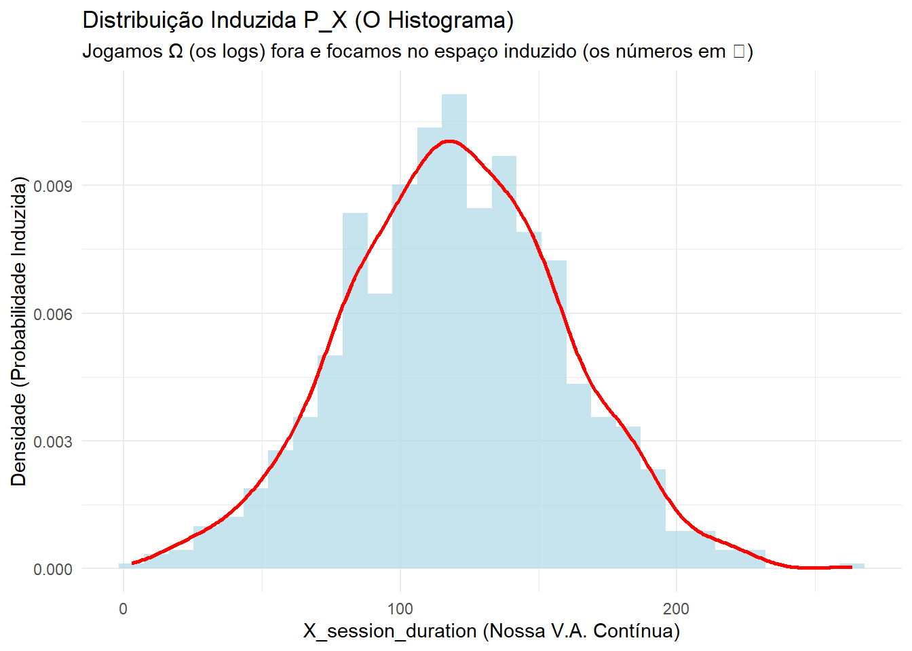

# Carregando pacotes
library(dplyr)
library(ggplot2)
library(tibble)
# 1. Nosso Espaço Amostral Omega (Ω)
# Cada linha (observação) é um resultado do experimento (ω)
# O data.frame em si é o nosso universo Omega
set.seed(42)
Omega_data <- tibble(
user_id = 1:1000,
# O 'evento bruto' ω pode ser um log complexo
raw_event_log = paste0("user_id: ", user_id, ", time: ", rnorm(1000, 50, 20)),
# FEATURES (Variáveis Aleatórias)
# X é uma v.a. contínua (extraída do log)
X_session_duration = abs(rnorm(1000, 120, 40)),
# Y é uma v.a. discreta (extraída do log)
Y_click_count = rpois(1000, 1.5),
# Z é uma v.a. binária (Função Indicadora)
Z_is_vip = sample(c(0, 1), 1000, replace = TRUE, prob = c(0.9, 0.1))
)6 Variáveis Aleatórias
Até agora, lidamos com o espaço amostral \(\Omega\) (ex: o conjunto de todos os usuários) e eventos \(\mathcal{F}\) (ex: “o usuário é VIP”). No entanto, em Data Science, raramente trabalhamos com o evento “bruto” \((\omega)\).
Não analisamos o log JSON inteiro de um usuário; nós extraímos métricas numéricas dele:
session_duration_seconds = 124.5click_count = 3converted = 1
Uma Variável Aleatória (v.a.) é a ferramenta matemática formal que representa essa extração. É uma função que mapeia o resultado complexo de um experimento (\(\omega\)) para um número real (\(\mathbb{R}\)) que podemos medir e modelar.
Exemplo 6.1 (Exemplo 2.1) Um usuário visita um site \(n\) vezes. Observamos a sequência de cliques (C) e não-cliques (K). \(\Omega = \{(a_1, a_2, \dots, a_n) : a_i = C \text{ ou } a_i = K, i=1, \dots, n\}\). Um \(\omega\) individual seria uma sequência como \((C, K, K, C, ...)\).
Nosso interesse não é a sequência exata, mas a métrica \(X\): número de cliques. \(X(\omega) =\) número de “C” observados em \(\omega = (a_1, \dots, a_n)\). \(X\) é uma v.a. que mapeia uma sequência de eventos para um número inteiro.
Exemplo 6.2 (Exemplo 2.2 (alternativo) Selecionar um cliente ao acaso para análise de crédito. Temos \(\Omega = \{\text{todos os clientes}\}\). O resultado \(\omega\) é o perfil completo de um cliente (histórico, renda, etc.).
Estamos interessados em $X = $ score de risco (normalizado). \(X: \Omega \rightarrow [0, 1]\). Podemos criar outras v.a.s (outras features): * \(Y(\omega) = \text{idade do cliente}\) * \(Z(\omega) = \omega^2\) (uma transformação de feature, como \(score^2\), para um modelo)
Em todo caso, X é uma função de \(\Omega\) em \(\mathbb{R}\), isto é, \(X: \Omega \rightarrow \mathbb{R}\).
Exemplo 6.3 (Exemplo 2.2 (original)) Escolher um ponto ao acaso em \([0, 1]\). Temos \(\Omega = [0, 1]\). Poderíamos ter \(X =\) quadrado do valor observado; \(X(\omega) = \omega^2\).
Em todo caso, X é uma função de \(\Omega\) em \(\mathbb{R}\), isto é, \(X: \Omega \rightarrow \mathbb{R}\).
Vamos impor uma restrição sobre a função X que permitirá atribuir probabilidades a eventos como “número de caras é, no máximo, 5”.
Definição 6.1 (Definição 2.1 (Variável Aleatória)) Uma variável aleatória (v.a.) \(X\) em um espaço de probabilidade \((\Omega, \mathcal{F}, \mathbb{P})\) é uma função real definida em \(\Omega\) tal que \[ \{\omega \in \Omega : X(\omega) \le x\} \] é um evento aleatório para todo \(x \in \mathbb{R}\), isto é, \[ \{\omega \in \Omega : X(\omega) \le x\} \in \mathcal{F}, \forall x \in \mathbb{R}. \]
Notas:
- Utilizamos a notação \(\{X \le x\} = \{\omega \in \Omega : X(\omega) \le x\}\).
- Em Teoria da Medida, \(\{X \le x\} \in \mathcal{F}, \forall x \in \mathbb{R}\), significa que X é uma função mensurável a \(\mathcal{F}\).
- Note que \(\{X \le x\}\) é a imagem inversa de \(X\) no intervalo \((-\infty, x]\), isto é, \(X^{-1}((-\infty, x])\).
DicaPerspectiva de Data Science: A V.A. como ‘Feature’ e a \(\sigma\)-álgebra como ‘Schema’
Esta definição é a garantia teórica para nossas queries diárias.
- \(X\) é a Feature: Pense em \(X\) como a coluna
session_durationem seu data frame. - \(\Omega\) é a Fonte de Dados Bruta: Pense em \(\Omega\) como a coleção de todos os logs JSON brutos do servidor. \(X(\omega)\) é a função (o parser) que extrai o valor
session_durationde um log \(\omega\). > * A Condição de Mensurabilidade: A condição \(\{X \le x\} \in \mathcal{F}\) significa: “O conjunto de todos os logs brutos (\(\omega\)) que resultaram em umasession_durationmenor ou igual a \(x\) deve ser algo que nosso schema de dados (\(\mathcal{F}\)) nos permite identificar.”
Se nosso schema (\(\mathcal{F}\)) não nos permite filtrar por “duração”, então a função \(X = \text{session\_duration}\) não é uma variável aleatória válida em nosso sistema, pois não podemos calcular \(\mathbb{P}(X \le 30)\).
Exemplo 6.4 (Exemplo 2.3 (Variável Aleatória Constante)) Seja \(X(\omega) = 5, \forall \omega \in \Omega\). Verifique que X é v.a. Temos que \[ \{X \le x\} = \{\omega \in \Omega : X(\omega) \le x\} = \begin{cases} \emptyset, & x < 5 \\ \Omega, & x \ge 5 \end{cases} \] Como \(\emptyset\) e \(\Omega\) estão em \(\mathcal{F}\), então X é v.a.
- Dizemos que uma v.a. é degenerada em \(c\) se existe um \(c\) tal que \(\mathbb{P}(X=c)=1\). No Exemplo exm-va-constante, X é degenerada em 5.
Exemplo 6.5 (Exemplo 2.4 (Função Indicadora)) Seja \(A \subseteq \Omega\). Defina \[ I_A(\omega) = \begin{cases} 1, & \omega \in A \\ 0, & \omega \notin A \end{cases} \] (função indicadora). Se \(A \in \mathcal{F}\) e \(X = I_A(\omega)\), mostre que X é v.a. \[ \{X \le x\} = \{\omega \in \Omega : X(\omega) \le x\} = \begin{cases} \emptyset, & x \in (-\infty, 0) \\ A^c, & x \in [0, 1) \\ \Omega, & x \in [1, +\infty) \end{cases} \] Como \(A \in \mathcal{F}\), então \(A^c \in \mathcal{F}\). Como \(\emptyset, A^c, \Omega \in \mathcal{F}\), X é v.a.
DicaPerspectiva de Data Science: A Função Indicadora é a Dummy Variable
A função indicadora é uma das v.a.s mais importantes. É como transformamos eventos categóricos (VIP/Não-VIP, Clicou/Não-Clicou, Fraude/Não-Fraude) em números (1/0).
\(X = I_A\) é a “dummy variable” ou a coluna “one-hot encoded” (is_vip) que usamos para treinar modelos de regressão logística, árvores de decisão e redes neurais. Esta prova mostra que, desde que o evento original (\(A\)) seja mensurável em nosso schema, a dummy variable correspondente é uma v.a. válida.
Exemplo 6.6 (Exemplo 2.5) Seja \(\Omega = \{1, 2, 3, 4\}\), \(\mathcal{F} = \{\emptyset, \Omega, \{1, 2\}, \{3, 4\}\}\) e \(B = \{1, 3\}\). Seja \(Y(\omega) = I_B(\omega) = \begin{cases} 1, & \omega \in \{1, 3\} \\ 0, & \omega \in \{2, 4\} \end{cases}\). Verifique se Y é v.a.
Para \(x \in [0, 1)\): \(\{Y \le x\} = \{\omega \in \Omega : Y(\omega) \le x\} = \begin{cases} \emptyset, & y < 0 \\ B^c, &y \in [0,1)] \\ \Omega, & y \geq 1 \end{cases}\)
Como \(B^c = \{2, 4\} \notin \mathcal{F}\), Logo Y não é v.a.
Exemplo 6.7 (Exemplo 2.5 (Dados Não Coletados)) Seja \(\Omega = \{u_1, u_2, u_3, u_4\}\) (4 usuários) e \(\mathcal{F} = \{\emptyset, \Omega, \{1, 2\}, \{3, 4\}\}\). Nosso schema \(\mathcal{F}\) só nos permite ver dois grupos: “Controle” \(\{1, 2\}\) e “Tratamento” \(\{3, 4\}\).
Agora, considere uma propriedade \(B = \{1, 3\}\) (ex: “usuários que acessaram de manhã”), algo que não coletamos.
Seja \(Y(\omega) = I_B(\omega) = \begin{cases} 1, & \omega \in \{1, 3\} \text{ (acessou de manhã)} \\ 0, & \omega \in \{2, 4\} \text{ (não acessou de manhã)} \end{cases}\). Verifique se Y é v.a.
Vamos checar a condição para \(x = 0.5\): \(\{Y \le 0.5\} = \{\omega : Y(\omega) = 0\} = \{2, 4\} = B^c\). Mas \(B^c = \{2, 4\}\) não é um evento em nosso schema \(\mathcal{F}\)! Não podemos “isolar” esse grupo.
Como \(\{Y \le 0.5\} \notin \mathcal{F}\), a função Y não é uma variável aleatória no nosso espaço. Conclusão: Você não pode criar features (v.a.s) a partir de informações que seu schema (\(\mathcal{F}\)) não contém.
6.1 Espaço de Probabilidade Induzido
Dado um espaço de probabilidade \((\Omega, \mathcal{F}, \mathbb{P})\) e uma v.a. X, definimos o espaço de probabilidade induzido por X como \((\mathbb{R}, \mathcal{B}, \mathbb{P}_X)\), em que \(\mathcal{B}\) é a \(\sigma\)-álgebra de Borel em \(\mathbb{R}\), que contém todos os subconjuntos de \(\mathbb{R}\) que nos interessam, e \[ \mathbb{P}_X(B) = \mathbb{P}(\{\omega \in \Omega : X(\omega) \in B\}), \quad B \in \mathcal{B} \] \[ = \mathbb{P}(X \in B) \]
Notas:
- Neste caso, o espaço amostral é \(\mathbb{R}\), os eventos aleatórios são os borelianos e a medida de probabilidade é \(\mathbb{P}_X\).
- A medida de probabilidade \(\mathbb{P}_X\) é chamada distribuição de X.
- Verifique que \(\mathbb{P}_X\) é, de fato, uma probabilidade.
DicaPerspectiva de Data Science: O Histograma é a Distribuição Induzida \(\mathbb{P}_X\)
Este é o passo mais importante da Análise Exploratória de Dados (EDA).
- Nós jogamos \(\Omega\) fora: Não nos importamos mais com os milhões de logs brutos (\(\Omega\)).
- Nós focamos em \(\mathbb{P}_X\): Nós nos importamos apenas com a distribuição da feature \(X\).
Quando você plota um histograma da session_duration, você está plotando uma estimativa empírica da distribuição induzida \(\mathbb{P}_X\).
O histograma da session_duration (\(X\)) vive no espaço \((\mathbb{R}, \mathcal{B}, \mathbb{P}_X)\). Ele não vive mais no espaço de logs brutos (\(\Omega, \mathcal{F}, \mathbb{P}\)). A v.a. \(X\) nos permitiu “transportar” a probabilidade de um espaço complexo (logs) para um espaço simples (\(\mathbb{R}\)) onde podemos fazer estatística.
Exemplo 6.8 (Exemplo 2.6) Um experimento coleta 3 features de um usuário: \(F_1, F_2, F_3\) (ex: device_type, country, time_of_day). \(\Omega = \{1, \dots, 6\} \times \{1, \dots, 10\} \times \{1, \dots, 24\}\) (um espaço amostral com \(6 \times 10 \times 24 = 1440\) resultados possíveis). \(\mathcal{F} = \mathcal{P}(\Omega)\) e \(\mathbb{P}\) é uniforme por simplicidade.
Estamos interessados apenas na feature \(X = F_1\) (device_type, com 6 tipos). \(X: \Omega \rightarrow \mathbb{R}\) com \(X(\omega) = \omega_1\), em que \(\omega = (\omega_1, \omega_2, \omega_3) \in \Omega\). Suponha que queiramos calcular \(\mathbb{P}(1.5 \le X \le 3.4)\) (ou seja, \(\mathbb{P}(X=2 \text{ ou } X=3)\)).
Cálculo no espaço original \((\Omega)\): \[ \mathbb{P}(\{\omega : 1.5 \le X(\omega) \le 3.4\}) = \mathbb{P}(\{\omega : \omega_1 \in \{2, 3\}\}) \] \[ = \frac{n(\{\omega : \omega_1 \in \{2, 3\}\})}{1440} = \frac{n(\{2, 3\} \times \{1, \dots, 10\} \times \{1, \dots, 24\})}{1440} \] \[ = \frac{2 \times 10 \times 24}{1440} = \frac{480}{1440} = \frac{1}{3} \] (Este cálculo foi complicado e exigiu pensar nas outras features).
Cálculo no espaço induzido \((\mathbb{R}, \mathcal{B}, \mathbb{P}_X)\): A v.a. \(X\) induz uma distribuição \(\mathbb{P}_X\) que é simplesmente: \[ \mathbb{P}_X(B) = \frac{n(B \cap \{1, 2, 3, 4, 5, 6\})}{6}, \quad B \in \mathcal{B}. \] (Nós efetivamente “ignoramos” as features \(F_2\) e \(F_3\)). Para calcular \(\mathbb{P}(1.5 \le X \le 3.4)\), nós perguntamos ao espaço induzido: \[ \mathbb{P}_X([1.5, 3.4]) = \frac{n([1.5, 3.4] \cap \{1, 2, 3, 4, 5, 6\})}{6} \] \[ = \frac{n(\{2, 3\})}{6} = \frac{2}{6} = \frac{1}{3} \] (Muito mais simples!)
6.2 Implementação Prática em R
Vamos demonstrar como um data.frame é o nosso \(\Omega\), e as colunas são as Variáveis Aleatórias.
head(Omega_data)| user_id | raw_event_log | X_session_duration | Y_click_count | Z_is_vip |
|---|---|---|---|---|
| 1 | user_id: 1, time: 77.4191689429334 | 213.00234 | 2 | 0 |
| 2 | user_id: 2, time: 38.7060365720782 | 140.96489 | 4 | 0 |
| 3 | user_id: 3, time: 57.2625682267468 | 158.82934 | 1 | 0 |
| 4 | user_id: 4, time: 62.6572520992208 | 135.07894 | 3 | 0 |
| 5 | user_id: 5, time: 58.08536646282 | 80.16266 | 0 | 0 |
| 6 | user_id: 6, time: 47.8775096781703 | 96.10068 | 1 | 0 |
V.A.s como Funções
X_session_duration, Y_click_count e Z_is_vip são nossas v.a.s. Elas mapeiam o raw_event_log (ou user_id, nosso \(\omega\)) para um número.
Explorando Eventos \(\{X \le x\}\)
A “condição de mensurabilidade” \(\{X \le x\} \in \mathcal{F}\) é o que nos permite usar o comando filter().
# O evento A = {ω : X_session_duration(ω) <= 30}
# Este é o subconjunto de *usuários* (linhas) que satisfazem a condição.
evento_A <- Omega_data |>
filter(X_session_duration <= 30)
cat("Número de usuários (ω) no evento {X <= 30}:", nrow(evento_A), "\n")Número de usuários (ω) no evento {X <= 30}: 13 # Podemos calcular a probabilidade deste evento
P_A <- nrow(evento_A) / nrow(Omega_data)
cat("P(X <= 30) =", P_A, "\n")P(X <= 30) = 0.013 O Espaço Induzido \(\mathbb{P}_X\) (O Histograma)
Não precisamos mais do Omega_data (os logs brutos). Focamos apenas na distribuição da feature \(X\).
# P_X é a "distribuição de X"
# O histograma é a nossa visão empírica de P_X
ggplot(Omega_data, aes(x = X_session_duration)) +
geom_histogram(aes(y = after_stat(density)), bins = 30, fill = "lightblue", alpha = 0.7) +
geom_density(color = "red", linewidth = 1, alpha= 0.9) +
labs(
title = "Distribuição Induzida P_X (O Histograma)",
subtitle = "Jogamos Ω (os logs) fora e focamos no espaço induzido (os números em ℝ)",
x = "X_session_duration (Nossa V.A. Contínua)",
y = "Densidade (Probabilidade Induzida)"
) +
theme_minimal()
6.2.1 Distribuição Induzida de uma Função Indicadora \(\mathbb{P}_Z\)
Para a dummy variable \(Z\) (Z_is_vip), a distribuição \(\mathbb{P}_Z\) é o que chamamos de Distribuição de Bernoulli. A “distribuição” de \(Z\) é apenas \(P(Z=0)\) e \(P(Z=1)\).
Omega_data |>
count(Z_is_vip) |> # Agrupa pelos valores da v.a.
mutate(P_Z = n / sum(n)) # Calcula a probabilidade induzida| Z_is_vip | n | P_Z |
|---|---|---|
| 0 | 891 | 0.891 |
| 1 | 109 | 0.109 |